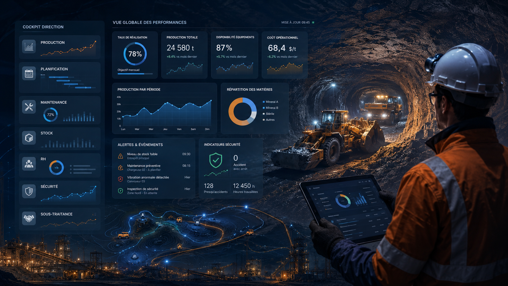

Compréhension du terrain
Lire les contraintes réelles avant de structurer les indicateurs.
À propos
Une expertise terrain et digitale au service du pilotage de la performance industrielle.
J’accompagne les entreprises industrielles dans la transformation de leurs données opérationnelles en indicateurs fiables, tableaux de bord KPI et cockpits Direction exploitables.
Profil
Mon profil combine une expérience terrain industrielle, une compréhension des contraintes opérationnelles et une capacité à structurer les données pour produire des KPI fiables, utiles et exploitables.
J’interviens sur le suivi des écarts prévu vs réalisé, l’analyse des données, la digitalisation des processus, la création de tableaux de bord KPI et l’accompagnement vers une vision Direction claire.
AIT HOU HISHAM
Consultant / Pilotage Opérationnel & Performance KPI
Du terrain à la décision.
Ma valeur ajoutée
Lire les contraintes réelles avant de structurer les indicateurs.
Transformer les informations opérationnelles en mesures utiles.
Clarifier les sources, règles, référentiels et formats de suivi.
Avancer par étapes, sans casser les pratiques déjà utiles.
Consolider les indicateurs critiques pour faciliter l’arbitrage.
Prioriser les besoins concrets, les données fiables et les usages réels.
Une double compétence
Ma vision
La performance ne dépend pas seulement de la donnée collectée, mais de sa qualité, de sa traçabilité, de son interprétation et de sa transformation en décisions concrètes.
Je ne construis pas seulement des tableaux de bord : je structure une chaîne complète de pilotage qui relie les opérations, les indicateurs et la décision.

Domaines d’intervention
Coordonnées
Consultant / Pilotage Opérationnel & Performance KPI
Accompagnement KPI
Je peux vous aider à structurer vos données, fiabiliser vos KPI et mettre en place une démarche progressive de pilotage opérationnel.